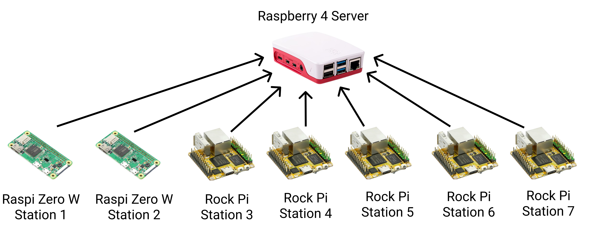

Embedded Programming · Internet of Things
Wireless Employee Attendance

Abstract
Most companies track attendance through NFC-based ID cards, but employees who forget their card end up logging attendance manually. This project builds a wireless attendance system using Bluetooth Low Energy and Bluetooth Classic to detect an employee's phone instead — something people almost never forget to bring. The same approach also detects laptops over BLE or Bluetooth.
System Architecture

Acknowledgements
This research was conducted with the help of:
- Mr. Indar Sugiarto — internship supervisor
- And others who I couldn't mention individually